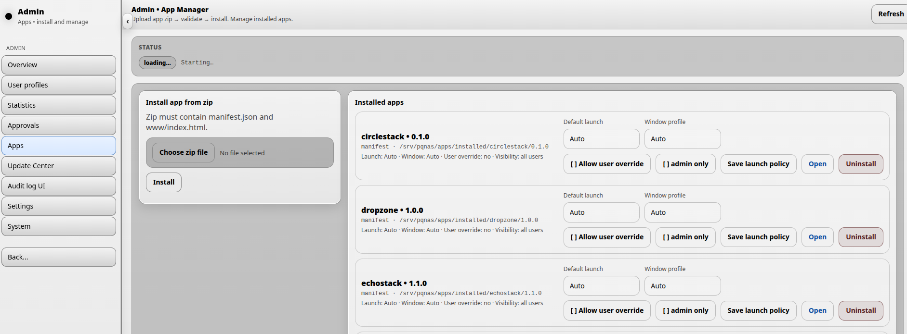

Applications
DNA-Nexus / PQ-NAS uses a modular architecture. This means that additional features can be added to the system by installing applications.
Applications are managed from the administrator menu under Applications.

On this page, an administrator can install, remove, update, open and configure applications.
Installed applications
Each installed application is shown in the applications list. After an application has been installed, the administrator can define how the application should behave when it is launched.
Launch policy
Default launch controls how the application opens by default.
- Automatic lets DNA-Nexus choose the default launch behavior.
- Embedded opens the application inside the DNA-Nexus desktop or workspace experience.
- Detached opens the application in a separate window.
Window profile defines the initial window size used when the application is opened in detached mode.
Allow user override means that users may change their own launch preferences for the application. In DNA-Nexus / PQ-NAS version 1.2.1, this option is visible in the interface, but user-side overrides are not yet active.
Application visibility
When Admin only is enabled, the application is hidden from normal users and is only available to administrators.
This is useful for administrative tools such as Storage Manager and Snapshot Manager.
Saving, opening and removing applications
- Click Save launch policy to store the selected launch and visibility settings.
- Click Open to launch the selected application in its own window.
- Click Uninstall to remove an installed application.
Installing a new application or version
A new application, or a new version of an existing application, can be installed from a ZIP package using the upload area on the right side of the Applications page.